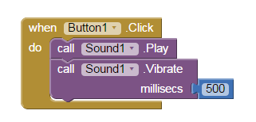

'Hello Purr' Interactive Cat App
Created: February 5, 2015
This mobile application allows the user to "pet the kitty" by pressing the button. It was created in the course Game Design 2 using MIT App Inventor, and their tutorial which can be found here.
The code, in the form of a block interface, detects when the button on the bottom is tapped. The sound effect of a cat's meow is then played and the device is vibrated for a short amount of time.
